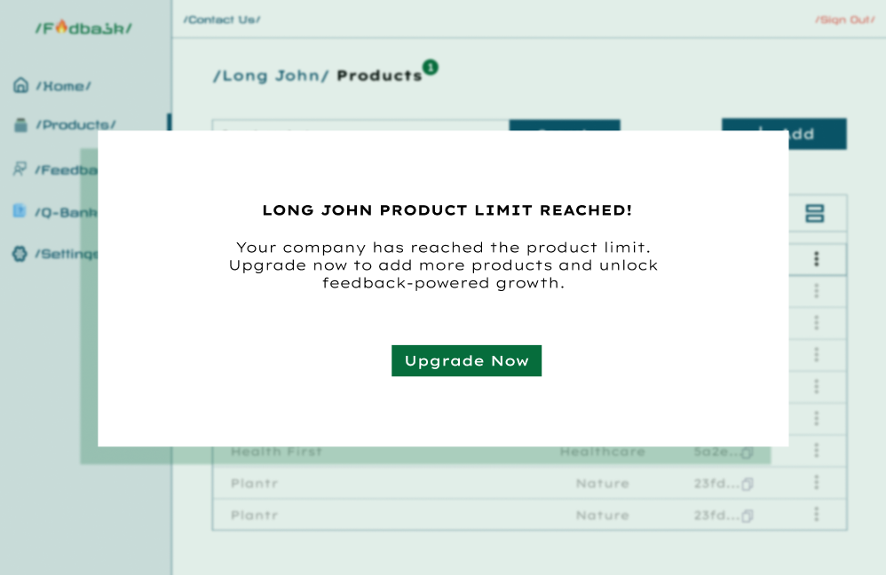
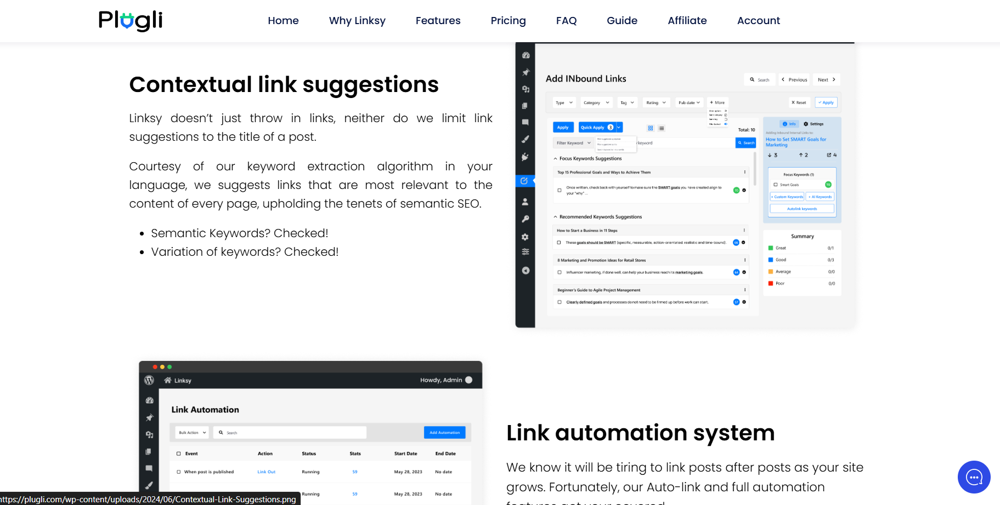
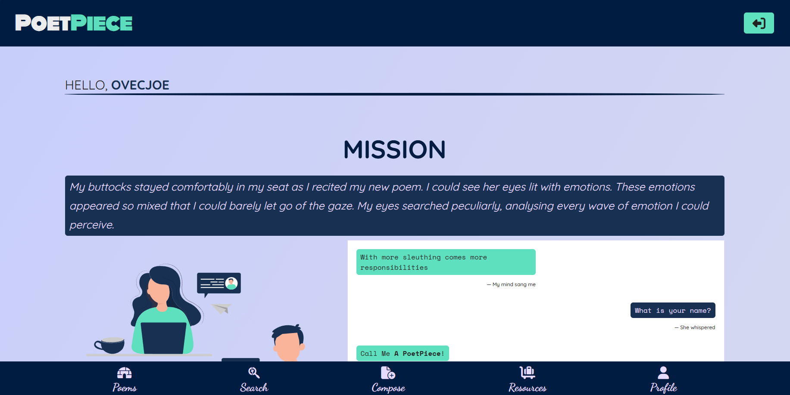

Here are some of the projects I have worked on, contributed to, or currently working on.

Fidbark (WIP)
This is a web application that empowers companies to build user-centric feedback-driven products.
It allows companies to collect, analyze, and act on user feedback to improve their products and services.

Execubits CLI (WIP)
This is a command-line interface tool that allows users to execute custom limited .ebits scripts using the CLI.
It can be used to play multiple audio wav files as a single stream or compress them into one file based on the defined instructions in the script.

Linksy (WP Plugin)
Using Natural Language Processing (NLP) and AI, Linksy leverages the semantic relationships between all posts on your WordPress site
to build the links that search engines love. It helps you to improve your site's SEO by automatically linking related posts together.
I contributed heavily on the WordPress side of the plugin, building features like popular page builders support, SEO plugins support, and more.
Some of the technologies I used here are PHP, WordPress, JavaScript, Bootstrap, and Vuejs.

Sermonie (WP Plugin)
Sermonie allows churches and religious organizations who use WordPress to power their websites to easily manage and publish sermons on their websites.
It provides a simple and intuitive interface for adding, editing, and organizing sermons, as well as displaying them on the front end of the website.
Built with PHP, WordPress, JavaScript, Tailwind CSS, and TinyMCE.

PoetPiece
I can't do without mentioning PoetPiece regardless of the unattractive interface.
PoetPiece is a simple web application that allows users to write, save, and share poems. This is where I write most of my poems.
I used Flask, Python, and the JAMStack here and I hope to rewrite it with NextJS someday so I can integrate some wild dreams I have for it.

WPLizard CLI (WIP)
A CLI setup wizard that helps you to quickly set up your WordPress plugin development environment without the hassle that comes
with using modern frontend technologies like React in WordPress plugin development.
Built with Node.js, TypeScript, Redis, OCLIF, Docker, and more.